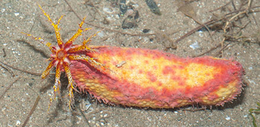
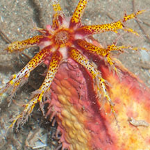
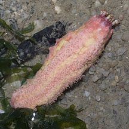
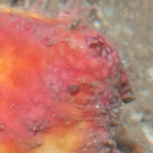

|
|
| sea cucumbers text index | photo index |
| Phylum Echinodermata > Class Holothuroidea |
| Pink
warty sea cucumber Cercodemas anceps Family Cucumariidae updated Apr 2020 Where seen? This small psychedelic sea cucumber is common our Northern shores. It appears to be seasonally abundant. There are times where many individuals are seen, jammed next to one another. At other times, few are seen, widely separated from one another. Among seagrasses, clinging to tubeworm tubes, fan clam shells or other hard surfaces, sometimes half buried in sediments. Features: 6- 8cm long. Body short, squarish or quadrangular in cross-section with a distinct upperside and underside. Underside is flat with three rows of tiny short pink tube feet emerging from pink stripes. Upper side bright yellow with rounded (not pointed) warty bumps. Usually two bright pink irregular stripes along the sides with scattered bright pink spots/blotches. Feeding tentacles, dark red at the base, base colour bright yellow or white covered with bright yellow spots/blotches and tiny red speckles, branched tips white or translucent. Anus is surrounded by five tiny teeth-like structures. Sometimes mistaken for the Thorny sea cucumber which looks similar and is found in the same habitat often next to the Pink warty sea cucumber. The Thorny sea cucumber has soft conical projections and is more red than pink and seldom has yellow on its body. |
 Changi, May 14 |
 Colourful feeding tentacles. |
|
 Changi, Jul 12 |
 Underside with three rows of tube feet. |
 Anus surrounding by five tiny 'teeth'. |

|
| Pink warty sea cucumbers on Singapore shores |
On wildsingapore
flickr
|
| Other sightings on Singapore shores |
|
Links
References
|